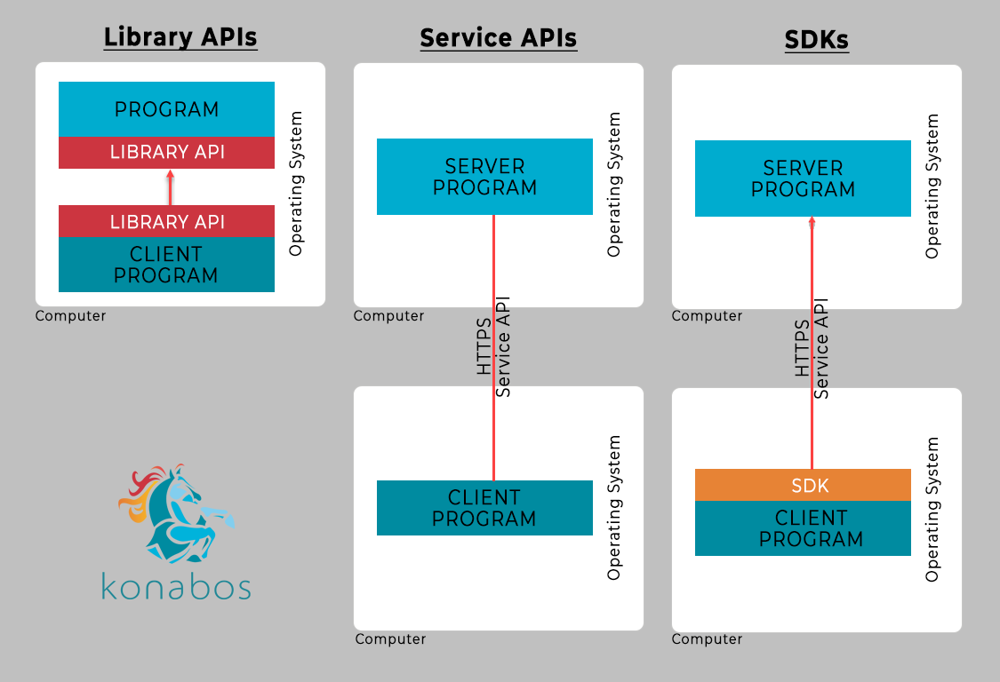

SDK - software development kit This is a tool that allows you to communicate with some external system using your programming language. Sounds a bit frustrating, so, let's say that SDK == a couple of libraries Here you can see difference between API, Library and SDK 
What about examples ?¶
Asana SDK¶
// Install by running `npm i asana`
const Asana = require('asana');
let asanaClient = Asana.ApiClient.instance;
let clientToken = asanaClient.authentications['token'];
clientToken.accessToken = '';
let tasksApiInstance = new Asana.TasksApi();
let options = {
"limit": 50,
"project": "",
};
const response = await tasksApiInstance.getTasks(options)
console.log(response)
This code allows to create a task in Asana without making any http request manualy